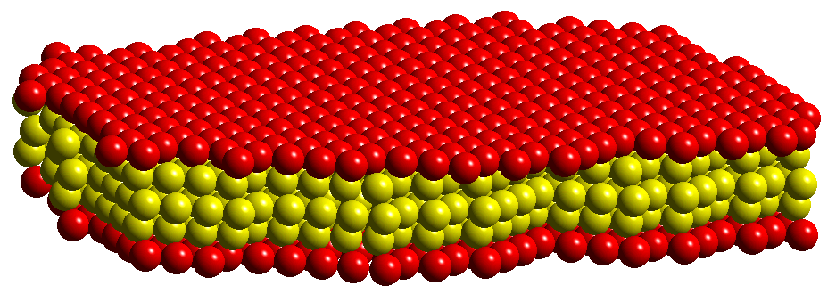
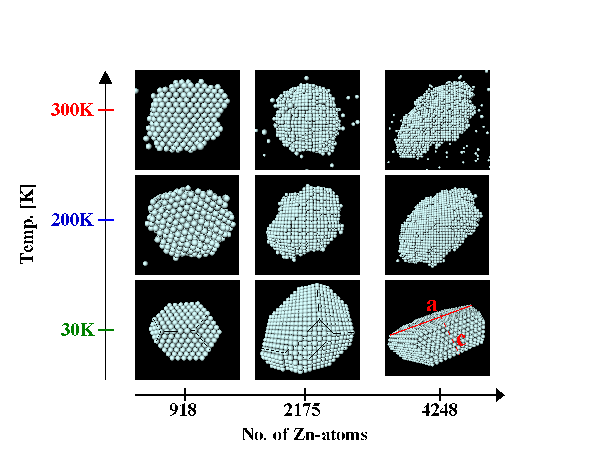

Metal alloys (e.g., aluminum- and magnesium-based) have great promise to reduce the weight of cars and light trucks without compromising safety. However, much basic science is not yet understood about e.g. Al-alloys, leading alloy designers often to simply "guess" at the parameters to be used in microstructural models. Thus, the role of basic energetic and thermodynamic data in designing metal alloys is crucial towards their application. Researchers working in NREL’s Solid State Theory Group have developed computational techniques for applying highly-accurate "state-of-the-art" first-principles (i.e., completely quantum-mechanical, parameter-free) computational approaches to obtaining thermodynamic properties of alloys. These calculations will play a central role in predicting a new class of modern metal alloys, designed on computers rather than in laboratories.
First-principles quantum-mechanical calculations are computationally expensive; thus, even on today’s fastest computers, the system size which can be simulated by first-principles approaches are limited by computational resources, and thus some "scaling up" of length scales is necessary to treat thermodynamic alloy problems. One method for this scaling up which is currently utilized in NREL’s Solid State Theory Group is in mapping accurate first-principles data onto simpler energy functionals which can then be used on a much larger length scale. The method is known as LEGO, or "Linear Expansion in Geometric Objects". Examples of this type of approach are in precipitation hardening in Al-Cu and Al-Zn alloys: Like most pure metals, aluminum is relatively weak, and therefore need to be strengthened via alloying additions. In precipitation hardening, common in Al-alloys, a small amount of a solute element is added to Al at high temperatures, and then the alloy is quenched down in temperature past the solubility limit of the alloying element. Thus, the solute element begins to precipitate out of the Al matrix, and these precipitates act to pin dislocations, and hence improve mechanical strength. However, without understanding the structure and stability of the precipitated phase, alloy designers cannot fully understand the strengthening mechanism. NREL researchers have predicted the thermodynamic stability and atomic-scale structure of Cu precipitates embedded in an Al matrix. The precipitation is determined by a combination of strain and interfacial energies, and an example of calculated strain energies for Cu embedded in Al is shown in Fig. 1. By using both strain and interfacial in thermodynamic Monte Carlo simulations, one can predict the complete atomic-scale structure of precipitates in Al. An exampleof this kind of hybrid "first-principles/scale up" approach is shown in Fig. 2, which shows the atomic-scale structure of an ordered Cu precipitate in a dilute Al-Cu alloy.

In the case of Al-Zn, our model allows for the first time a prediction of the observed size- and temperature dependence of precipitates in this alloy system. These precipitates consist only of Zn atoms. Examples of precipitates are visible in Fig. 3: In agreement with experimental studies, the precipitates change from a nearly spherical to a more hexagonal/ellipsoidal shape with decreasing temperature and increasing size.

The thermodynamic calculation was performed for a system of more than 200,000 atoms, extending to length scales approaching 200 Å approximately scaling the length scale of the first-principles calculations by a factor of 20-50. With further improvements, length scales of 1000 Å are in sight, thus leading to the possibility of microstructural modeling with completely atomistic approaches.
A. Zunger, "First Principles Statistical Mechanics of Semiconductor Alloys and Intermetallic Compounds," in NATO Advanced Study Institute on Statics and Dynamics of Alloy Phase Transformations, edited by P. Turchi and A. Gonis, Plenum Press, New York, 361-419 (1994).
Z. W. Lu, B. M. Klein and A. Zunger, "Spin-polarization-induced structural selectivity in Pd3X and Pt3X (X=3d) compounds," Phys. Rev. Lett. 75, 1320-1323 (1995).
C. Wolverton, V. Ozolins, and A. Zunger, "First-Principles Theory of Short-range Order in Size-mismatched Metal Alloys: Cu-Au, Cu-Ag, and Ni-Au," Phys. Rev. B. 57, 4332 (1998).
V. Ozolins, C. Wolverton, and A. Zunger, "Cu-Au, Ag-Au, Cu-Ag, and Ni-Au Intermetallics: First-Principles Study of Phase Diagrams and Structures", Phys. Rev. B 57, 6427 (1998).
C. Wolverton and A. Zunger, "An Ising-like Description of Structurally-Relaxed Ordered and Disordered Alloys", Phys. Rev. Lett.75, 3162 (1995).
S. Müller, C. Wolverton, L.-W. Wang, and Alex Zunger, "Coherent phase stability in Al-Zn and Al-Cu fcc alloys: The role of the instability of fcc-Zn", Phys. Rev. B, accepted
For a listing of all SST references on the topics "Transition Metal Alloys", "Electronic Structure of Random Networks", and "Light Metal Alloys", click on the "Get References" button below.